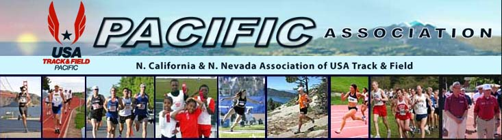
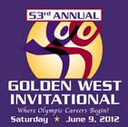
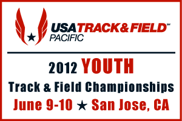

Join Now
FAQs
About the PA/USATF
News/Links
Contacts

Results, stories, videos

Complete Results
Latest News...
Updated: November 16, 2012
Background Check List Updated
Youth XC Grand Prix Final Standings
Clarksburg Half Marathon Scoring
The PA XC Championship meet, will also be the West Regional Championship
John Lawson Tamalpa Challenge Scoring
USATF's "Run With Us" Pairs Elites w/Youths
US Masters Road Rankings
Youth XC Schedule/Results Updated
Youth XC Grand Prix Final Standings
Humboldt Half Marathon Scoring
Update on Christian Hesch
Proposed 2012 T&F Grand Prix Final Standings
Christian Hesch admits to EPO usage
Race Walk 10K Results/Updated Standings
Tom Bernhard is New PA Men's LDR Chair
Susanna Bon is 5th at World 24-Hour Ultra
Race Walk GP Standings updated Updated
Top Performances at Natl. JOs
Reno's Gabby Williams Profile
Show me...
Youth
Road Racing
Cross Country
Ultra Running
Track and Field
Masters T&F
Race Walking
Elite Athletes
Members
Coaches
Officials
Awards
Equipment
Sports Medicine
Forms/Sanctions
Calendar/Meetings